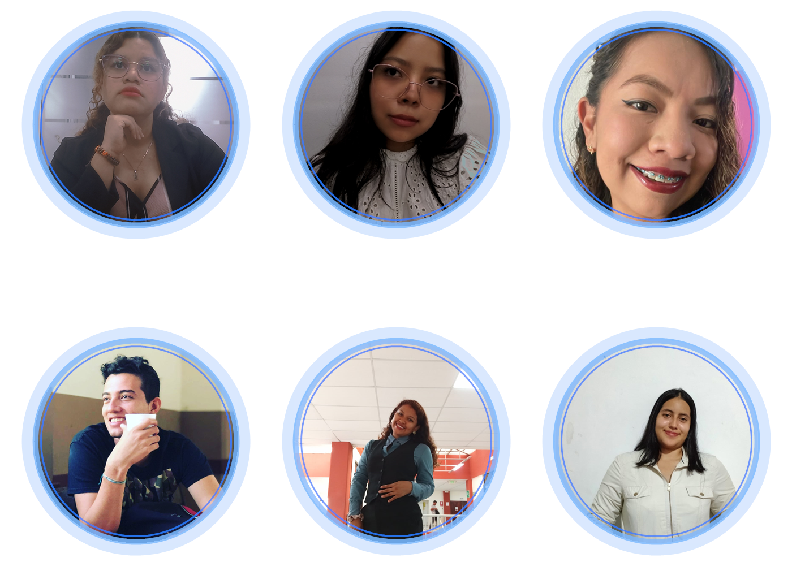
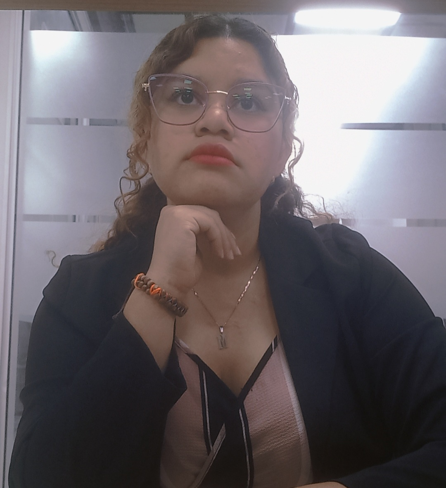
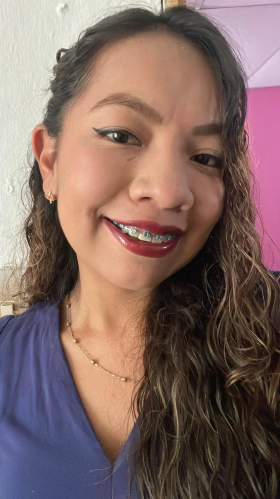
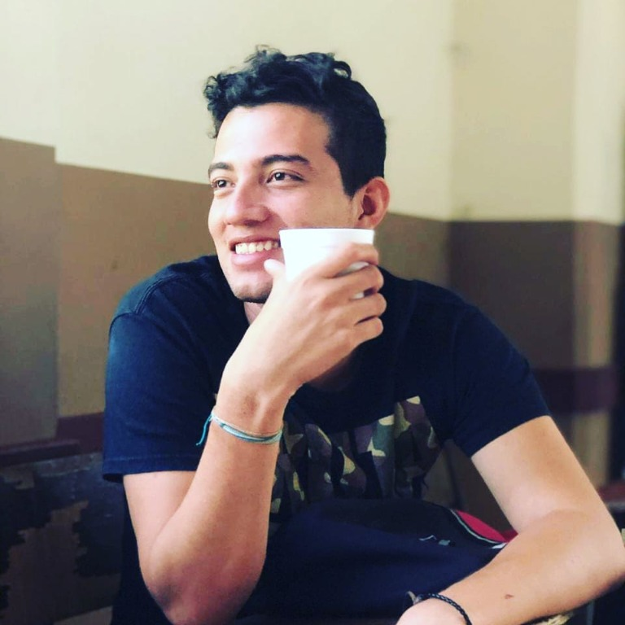
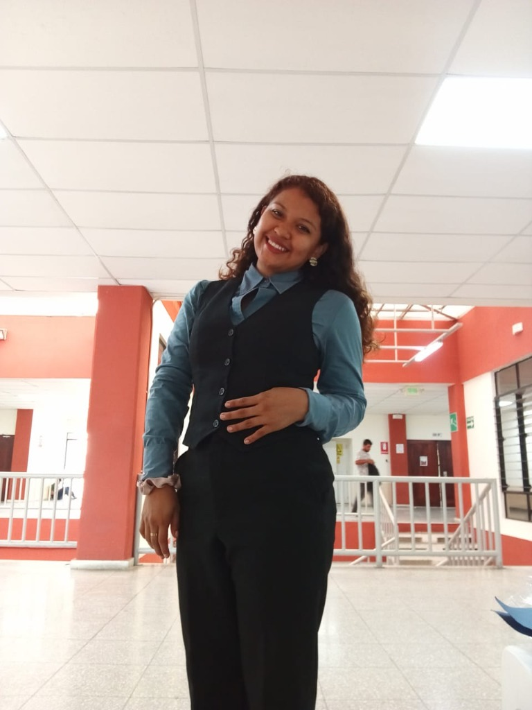
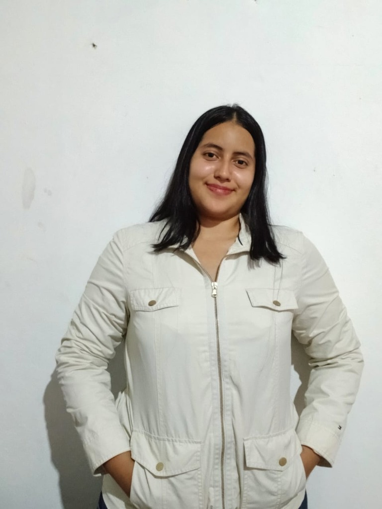

Bienvenidas y bienvenidos
Perfil del equipo
El proceso de evaluación será desarrollado por un equipo multidisciplinario de especialistas con trayectoria en evaluación de programas y proyectos de cooperación al desarrollo, transversalización del enfoque de género, seguridad alimentaria y nutricional, desarrollo rural e investigación social. La articulación de capacidades técnicas complementarias permitirá garantizar un abordaje integral, participativo y metodológicamente sólido, orientado a la generación de hallazgos, conclusiones y recomendaciones sustentadas en evidencia verificable.
Cada integrante desempeñará funciones y responsabilidades definidas conforme a su experiencia profesional, contribuyendo de manera coordinada al logro de los objetivos evaluativos, la aplicación de los instrumentos metodológicos y la entrega oportuna de los productos requeridos.

Área 02
Coordinación general
Lidera la planificación integral de la consultoría, coordina al equipo multidisciplinario y asegura la adecuada articulación entre los actores involucrados, incluyendo instituciones ejecutoras, beneficiarios y entidades financiadoras.
Perfil profesional

Dra. Meybi Guadalupe Umaña Martínez
Área 03
Género y derechos
Su labor busca identificar los cambios generados por la intervención en la vida de mujeres, hombres, jóvenes y grupos vulnerables, evaluando su contribución al empoderamiento, la igualdad de oportunidades y la reducción de brechas sociales.
Perfil profesional
Mtra. Alisson Nicole López González
Área 04
Seguridad alimentaria y desarrollo rural
Su trabajo se enfoca en determinar la efectividad, sostenibilidad e impacto de las acciones impulsadas por el proyecto para mejorar las condiciones de vida de las familias beneficiarias.
Perfil profesional

Ing. Jessica Marielos Alvarado Rico
Área 05
Análisis de datos
Diseña la metodología de investigación, define la muestra, valida instrumentos y procesa información cuantitativa y cualitativa para generar evidencia confiable, con rigor científico y validez estadística.
Perfil profesional

Mtro. Everth Josué Orellana Urquilla
Área 06
Sistematización y calidad
Transforma los resultados técnicos en conocimiento útil para la toma de decisiones institucionales y la difusión de experiencias exitosas entre los actores involucrados.
Perfil profesional

Lic. Sayra Guadalupe Hernández Pineda
Área 07
Cambio climático y sostenibilidad
Evalúa la sostenibilidad ambiental de la intervención y su contribución a la resiliencia comunitaria ante el cambio climático, con énfasis en prácticas sostenibles, recursos naturales y adaptación climática.
Perfil profesional

Mtra. Cecilia Elizabeth Hernández Cortés